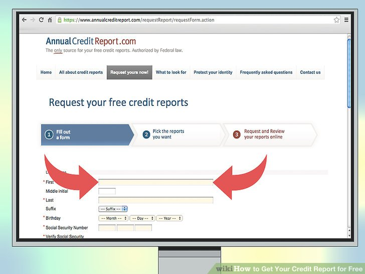

Free Credit Score & Free Credit Reports
 Free Credit Score & Free Credit ReportsFree Credit Score & Free Credit Reports
In addition to a strong historical past of income and employment, candidates will need to have a credit score of at the very least 620, as well as no late mortgage funds for the previous 12 months. The loan amount that you borrow in dangerous credit personal loans goes up to $25000 and relies upon in your revenue standing as properly. However, if in case you have an excellent rating with a high income and excellent debt-to-income ratio, you might do this. They ask your budget and begin complicated you with discount charges, MSRP, down payment ratio, interest rates, monthly funds, and so on. Don’t worry this number-dumper. Today, dangerous credit score holders together with arrears, defaults, late funds, skip installments, CCJs, IVA and bankruptcy can also avail fiscal assist from online mortgage lenders. Just mentions your primary details together with your name, contact number, account quantity, e mail id, residence handle, your occupation or salary. Your score could allow crooks to open and exploit sizable bogus mortgage or credit score-card account in your identify, after which disappear, leaving you to kind out the mess with the lender.
Free equifax credit report
But fear not, this guide is going to help you perceive the various kinds of bank account and their benefits and disadvantages. Don’t worry if you happen to shouldn't have money to make a down fee. So, don’t worry. Go out there and buy the automotive of your choice. But, do remember to calculate the resale worth and trade-in value of your outdated automobile. When you've got an outdated car lying round, you can promote it and use the money. It consists of the automobile mortgage amount, charges, plus different bills. However, the borrower has to pay a bit extra inflated curiosity price as lenders guarantee their future by calculating extra curiosity quantity, in case borrower doesn't repay the quantity. The rationale for that is that to fix dangerous credit score, you want to pay on all your debts, and at the least bankruptcy resets many of the debts to zero, whereas after foreclosure there is a good likelihood that you have many more accounts which might be due or previous due.
Business credit report
The CIBIL rating ranges from 300-900 factors and a CIBIL rating above 750 factors are typically thought of good. There might be thousands and thousands of consumers who won't have been believed that now they'll get personal loans even with poor credit score because prior to now loan facility was out there just for good credit score holders. To access these on-line unhealthy credit personal mortgage lenders simply log onto lender’s web site and fill a easy application kind mentioning your basic particulars. Also, evaluate interest rates of assorted mortgage lenders in order that you may get loan deal on possible interest rates as curiosity charges might be differ lender to lender. Also, check for buyer money/rebate programs. Such programs will reduce the value. Tell him that you really want the benefit of lowered price against it. They tell you ways low your monthly funds are. Credit reporting firms should tell you their investigation ends in writing.
But, you should not concentrate on month-to-month payments solely. But, you possibly can ask the seller to go on some quantity of the incentive benefits to you. Most significantly, don’t change into relaxed after you get auto mortgage quotes from the vendor. This manner you can get free clothes, with out loosing out on the objects you send in. When writing your letter, embody the gadgets you are disputing, the information surrounding why you consider this info to be inaccurate, and a transparent removal request. When the vendor starts his quantity game, ask him to offer you loan charges and every little thing else in writing. Don’t believe anything until it is in writing. Moreover, the lenders of loans additionally don’t listen in your previous credit score data, so there isn't a credit score examine, no paper work as properly. To make repayment straightforward the lenders can help you repay loan quantity in month-to-month or quarterly installments that fits you.